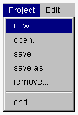

新規プロジェクトを作成する
新規プロジェクトを作成する2つの方法があります。
- 新規プロジェクトを作成する
- 既存プロジェクトをもとに新規プロジェクトを作成する

新規プロジェクトを作成する
- １．プロジェクトマネージャの Project メニューから new メニュー項目を選択します。

- プロジェクト名を登録するダイアログが開かれます。
２．このダイアログで新規プロジェクト名をキーボード入力してOKボタンをクリックすると、新規プロジェクトが作成されます。カレントプロジェクト（=現在作業中のプロジェクト）は新規プロジェクトになります。
- プロジェクトマネージャのタイトルにはカレントプロジェクトが表示されます。
- 新規作成したプロジェクトには、まだ構成要素が設定されていません。
OZにおけるプロジェクトの構成要素はクラスです。そして、プロジェクトの目的は1つのサブジェクトを完成させることです。したがって、1つのサブジェクトに属するクラスはプロジェクトの構成要素になります。サブジェクトlib
に設定されているクラスもプロジェクトの構成要素です。
ターゲットとなるサブジェクトを開発するために必要となるすべてのサブジェクトがプロジェクトの構成要素とならなくてはいけないのですが、現在のバージョンのプロジェクトマネージャはターゲットとなるサブジェクトと関係するクラスとサブジェクトlibのクラスだけを構成要素とします。
また、IDEを利用して開発を行う場合には、サブジェクトを構成するクラスが1つのディレクトリにまとめられていなければならないという制約があります。
プロジェクトを新規に作成したら、次にプロジェクトとOZソースファイルを結び付けるために、プロジェクトディレクトリを設定します。
既存のプロジェクトをもとに新規プロジェクトを作成する
- １．プロジェクトマネージャの Project メニューから save as メニュー項目を選択します。
- プロジェクト名を登録するダイアログが開かれます。
２．このダイアログで新規プロジェクト名をキーボード入力してOKボタンをクリックすると、カレントプロジェクト（=現在作業中のプロジェクト）が新規プロジェクトとして保存されます。
(c) 1996-1998 IPA, ETL, AT21, FSIABC, FXIS,
InArc, MRI, NUL, SBC, Sharp, TEC, TIS. All rights reserved.